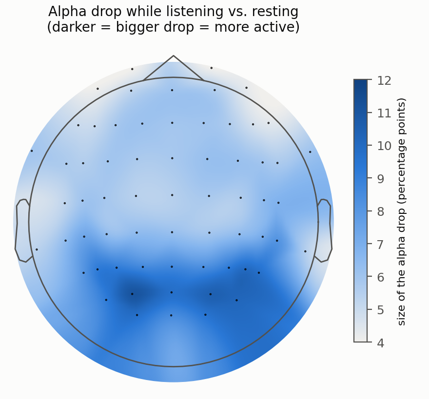
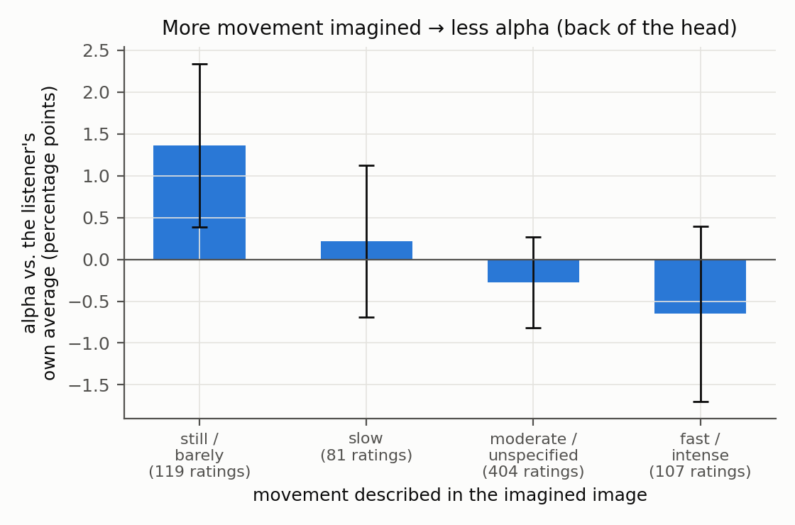
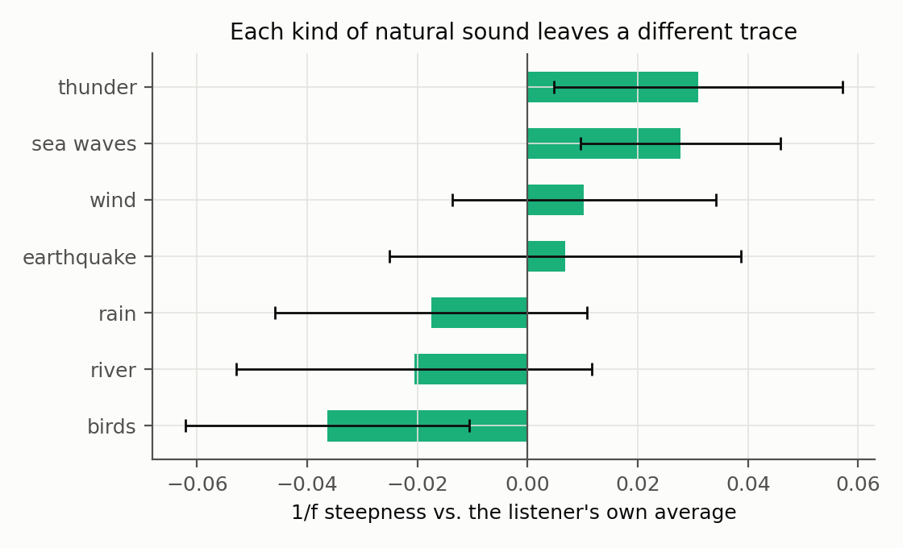
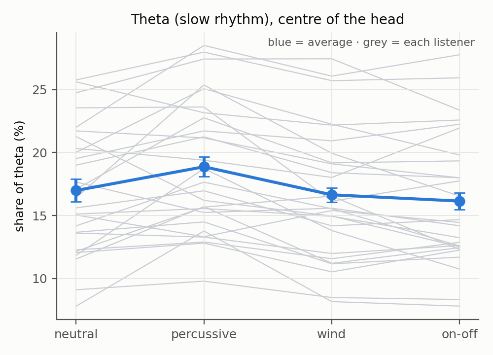
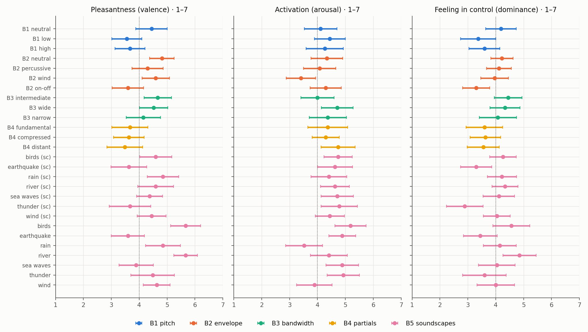

What happens in the brain when we listen to sound as material?
A plain-language summary of what we have found so far. 27 people listened to 27 sounds with their eyes closed while we recorded their brain activity, and told us what each sound made them feel and imagine.
What we did
The sounds. 13 synthetic sounds built in SuperCollider, each block changing one property (pitch, envelope, bandwidth or partials), and 14 recordings of natural soundscapes (birds, rain, river, sea waves, thunder, wind, earthquake), in two versions each. Every sound lasted 50 seconds, all at the same loudness.
The brain. While listening, each person wore a cap with 64 sensors (EEG) that pick up the tiny electrical rhythms of the brain through the scalp. We also recorded 3 minutes of quiet rest, eyes closed, before and after.
The experience. After each sound, people rated how pleasant, how activating and how "in control" it felt, named an emotion, and described the image it evoked: its colour, size, temperature, texture and movement.
Three words you need for this page
Brain rhythms
The EEG is like a recording of the brain's "hum". It mixes slow and fast rhythms, a bit like the bass, mids and treble of a mix. We look at how much of each is present.
Alpha rhythm
A rhythm of about 10 cycles per second, strongest when we rest with eyes closed. It works like an idle signal: when the brain gets busy (paying attention, imagining), alpha drops. Less alpha = a more engaged brain.
Complexity
How predictable or varied the brain signal is, like comparing a drone with a free improvisation.
How sure are we?
solid clear and consistentpromising real signal, needs confirmingcan't tell yet mixed up with other factors
What we found
Finding 1solid
Listening switches the brain on, especially at the back of the head

The head seen from above (nose at the top). Darker blue = a bigger drop in alpha while listening compared with resting. Alpha dropped everywhere, by at least 4 percentage points, so the colour scale starts at 4 to show where the drop was largest.
What we saw
Compared with resting, alpha dropped over the whole head as soon as people listened to a sound. The drop was largest at the back of the head, over areas usually linked to vision, and smaller over the sides, where hearing is processed.
Why it matters
People had their eyes closed the whole time, so this is not about seeing anything. It fits the idea of the project: listening to these sounds engages brain regions we normally associate with vision, perhaps because people build mental images.
Be careful
Alpha also drops simply with attention. We cannot yet say the visual areas are doing "visual" work.
Finding 2promising
The more movement people imagined, the less alpha they had

Each bar compares people with themselves: how much alpha they had with that kind of image, relative to their own average. The black lines show the uncertainty.
What we saw
When someone described the image a sound evoked as still, their alpha was higher; when they described fast or intense movement, it was lower, step by step. This holds when we compare each person only with themselves.
Why it matters
It links a brain measure to what people actually experienced, which is exactly what the project is about: sound perceived as something that moves in space. It is not explained by how activating or pleasant the sound felt, nor by muscle tension.
An intriguing detail
The link looked stronger for the synthetic SuperCollider sounds than for the natural soundscapes. One idea: with a recording of rain, people recognise the source and already know how it moves; with an abstract synthetic sound there is no source, so the listener has to build the movement from the sound itself. The difference between the two kinds of sound is not yet statistically clear, so for now this is a hypothesis to test in the next study.
Be careful
About two thirds of listeners (18 of 27) show the effect. It is small, it is spread over the head rather than only at the back, and we found it while searching through many possible links. It needs to be confirmed with new participants.
Finding 3solid
Each kind of natural sound leaves a different trace in the brain

One of several measures that differed between soundscapes: the "steepness" of the brain signal's spectrum. A steeper spectrum is usually read as a calmer, less excited brain state.
What we saw
Birds, river, rain, wind, sea waves, thunder and earthquake produced different brain patterns, mainly in the balance between slow and fast rhythms and in signal complexity. Birdsong tended to go with the "liveliest" brain signal, and thunder and sea waves with the calmest.
Why this one is trustworthy
The order of the soundscapes was shuffled for each person, so the differences cannot be explained by tiredness or by which sound came first.
Finding 4promising
Among the synthetic sounds, the envelope mattered most

Block 2: share of theta, a slow rhythm (4–8 cycles per second), at the centre of the head for each envelope. Blue = average of all listeners with its uncertainty; grey lines = individual listeners.
Changing the envelope (neutral, percussive, wind-like, on-off) changed brain activity. The percussive envelope stood out, with more slow theta activity. Changing pitch, bandwidth or partials did not produce clear differences. The sounds within each block were always played in the same order, so this needs confirming.
Finding 5solid
People agree on how sounds feel, especially on pleasantness and size

Average rating of every sound (1–7) with its uncertainty. Left: pleasantness (valence). Middle: activation (arousal). Right: feeling in control (dominance).
The sounds clearly differed in how pleasant, activating and controllable they felt, and in the size, temperature and movement of the images they evoked. Individuals vary a lot, but the group averages are very consistent, especially for pleasantness and imagined size. Birds and river were the most pleasant; the partials block, the on-off envelope and earthquake were among the least.
Finding 6can't tell yet
Synthetic vs natural sounds, and the two versions of each soundscape
These comparisons show differences, but we cannot interpret them because of how the session was ordered (see below). When we account for the time in the session, the difference between the two soundscape versions disappears.
The main limitation, in one paragraph
The order of the sounds was not shuffled enough
Everyone heard the soundscapes at the end, the first version of each soundscape before the second, and the sounds within each synthetic block in the same order. Over a long session people get tired and drowsy, which by itself changes the brain signal (alpha was higher in the final rest than in the first). So whenever two kinds of sound were always in the same order, we can't tell whether a difference comes from the sound or from the time.
What comes next
Analyse the sounds themselves. Measure the acoustics of each audio file (attacks, modulations, brightness, roughness) and the SuperCollider parameters, to see which sound properties drive the imagined movement and the brain response.
Look inside the 50 seconds. Check whether the brains of different listeners move together in time with the same sound.
Clean up and double-check the brain data (muscle activity) and have a person check how we coded the free-text descriptions.
Design the main study with the order shuffled for every person, more participants and a simple 1–7 scale for imagined movement, testing finding 2 and the "built vs recognised movement" idea as pre-registered hypotheses.
For the technical reader
EEG processing and measures
64 channels, 500 Hz; notch 49–51 Hz; band-pass 0.5–70 Hz; common average reference; 5-s epochs z-normalised per epoch (so mean, variance and absolute power are uninformative and were excluded); threshold-based artefact rejection. Median 9 clean epochs per stimulus; 9 recordings missing or with fewer than 5 epochs.
17 primary features: relative power (δ, θ, α, β, γ), median frequency, spectral entropy, sample entropy, Lempel-Ziv complexity, central tendency measure, aperiodic exponent (log-log fit 2–40 Hz excluding 7–14 Hz), individual alpha frequency, wPLI node strength (5 bands). Median across epochs; 6 ROIs plus global.
Statistics
Channel level: within-subject spatial cluster permutation tests (cluster mass, 5000 permutations; paired sign-flip or within-subject label permutation of a repeated-measures F).
ROI level: repeated-measures ANOVA (Greenhouse-Geisser) and linear mixed models with session position as covariate (LRT); Cohen's dz with bootstrap CIs; Benjamini-Hochberg FDR per family.
Brain–experience: trial-level mixed models with within/between-listener decomposition of each rating (833 tests; 79 at q < .05). Sensitivity: crossed stimulus random effect, gamma power as EMG proxy, arousal/valence/dominance covariates, listener-specific random slopes.